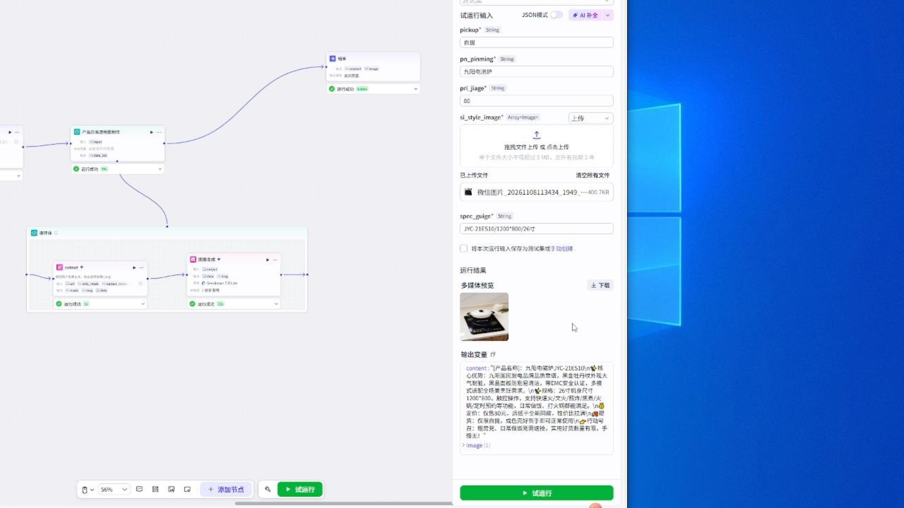
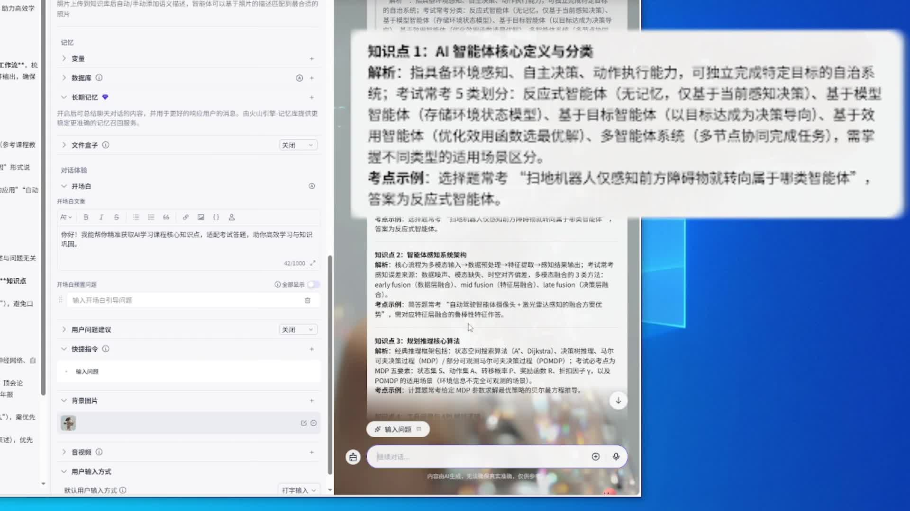
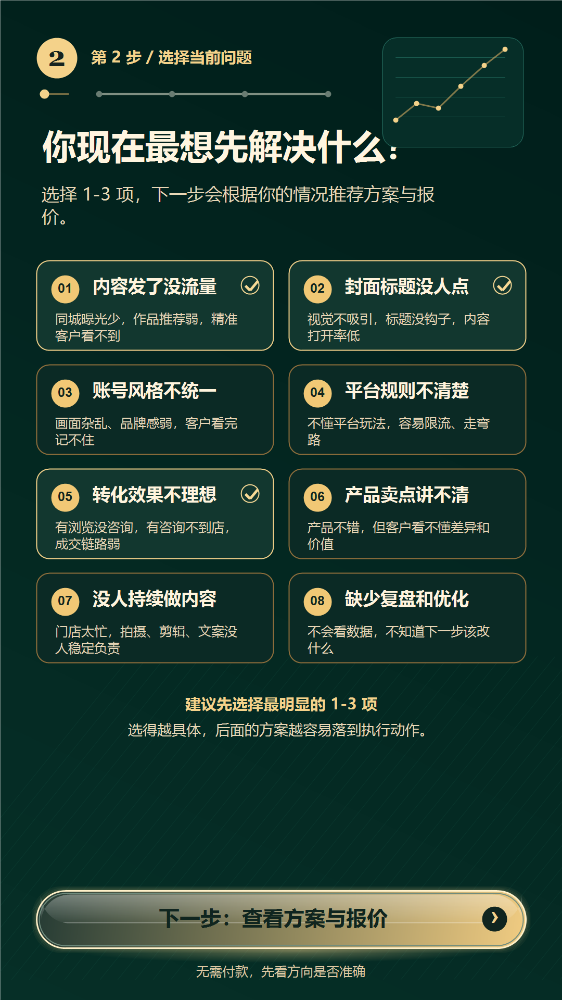

PROJECT 01 · DIFY
服装单款选款诊断智能体
将服装供应链经验转化为可复用的诊断流程，从图片、店铺资料、经营数据和趋势信息中输出款式特征、风险与行动建议。
- 我的角色
- 需求梳理、流程设计、提示词与审核规则、测试优化
- 关键流程
- 输入校验 → 视觉诊断 → 结果审核 → 诊断卡输出

我的能力
不止会使用工具，更关注业务问题、执行过程和最终交付。
SELECTED WORK
真实业务场景的AI应用、智能体、内容与增长实践。
PROJECT 01 · DIFY
将服装供应链经验转化为可复用的诊断流程，从图片、店铺资料、经营数据和趋势信息中输出款式特征、风险与行动建议。


PROJECT 02 · COZE / KNOWLEDGE
独立完成闲置物品种草官、链接生成热门文案、AI课程知识库学习助手和皮肤护理咨询助手等原型。

PROJECT 03 · LOCAL BUSINESS
围绕本地餐饮商家真实经营场景，完成账号分析、首批选题、脚本、分镜、拍摄顺序、现场执行、剪辑与复盘。
MORE WORK · 19 VIDEOS
涵盖餐饮、母婴辅食、女装、珠宝、少儿运动、人物口播与原创剧情短片。麻婆豆腐成片复用上方真实案例，不重复存储。
PROJECT 04 · H5 EXPERIENCE
设计行业选择、痛点识别和建议输出路径，让商家快速理解自身问题与可执行的服务方向。



VERIFIED RESULTS
所有数据均来自真实经营与内容案例，敏感信息已做必要处理。
REPEATABLE PERFORMANCE
四组抖音女装经营记录均达到较高成交与订单规模，用于补充证明持续运营和订单承接能力。
EXPERIENCE
将长期经营经验与AI应用能力结合，理解业务，也能推进交付。
智能体、知识库、内容生产、H5原型与本地商家短视频项目。
原创设计、选款测款、达人对接、直播排品、话术培训与供应链交付。
商家对接、商品定位、页面包装、平台活动、销售与直播运营协同。
CREDENTIALS
中国电子学会AI智能体应用开发工程师高级专业技术证书，以及人工智能与创业智慧课程认证。公开展示已对证件号码作隐私处理。